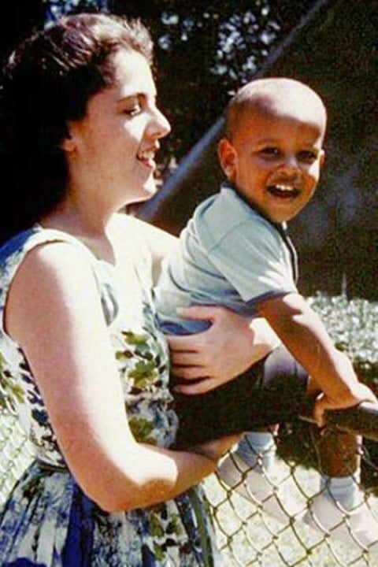
버락 오바마 어린시절
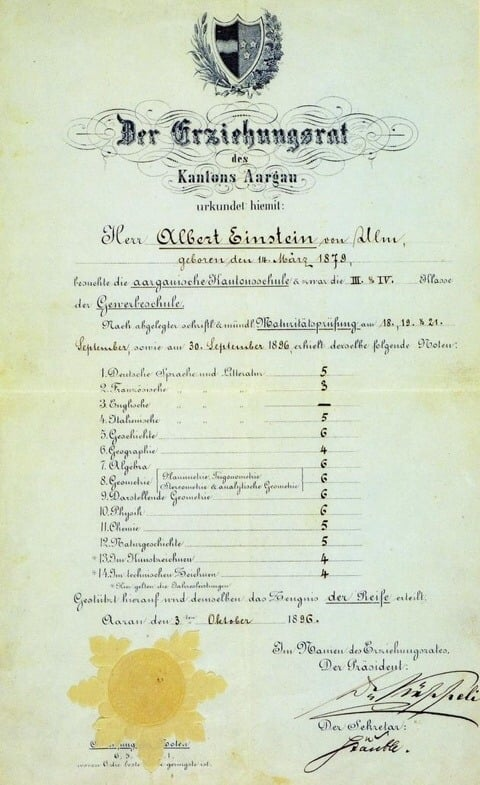
아인슈타인 성적표
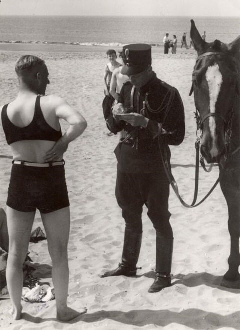
1931년, 점잖은 옷차림을 하지않았다는 이유로 벌금형을 때리는 경찰
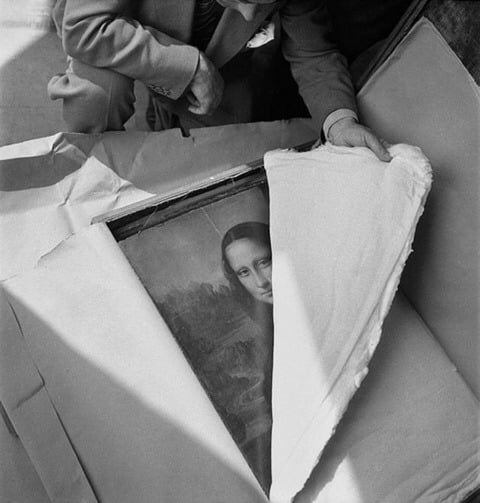
1945년, 제2차세계대전이 끝나고 프랑스로 돌아온 모나리자
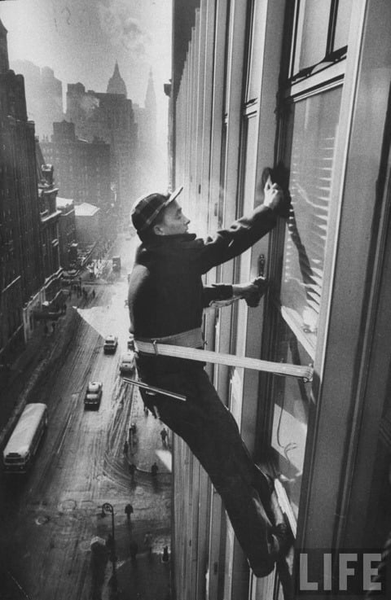
1957년, 뉴욕 유리창 청소부
1942년, 영국군이 전복된 전차 아래서 비를 피하고 있다
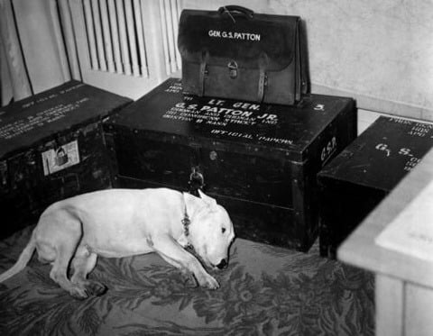
조지 패튼이 죽고난후, 여전히 그자리를 지키는 애완댕댕이
1917년, 영국 군인의 유언을 받아적는 간호사
1972년, 시위대와 그를 진압하는 경찰로 다시만난 옛 친구
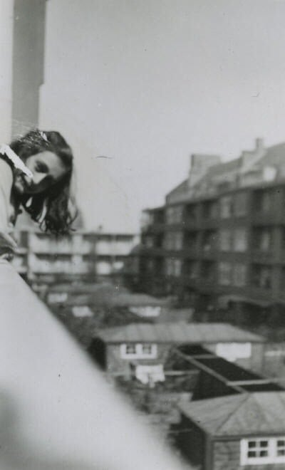
1942년, 얼굴을 내밀고 있는 안네 프랑크
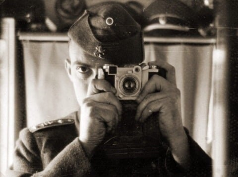
1943년, 셀카를 찍고있는 불가리아 군인
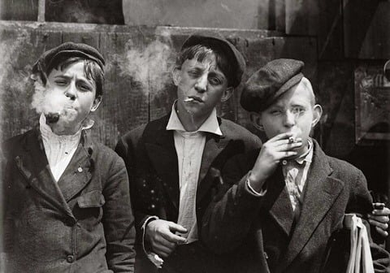
1880년, 담배를 피우는 어린이노동자들
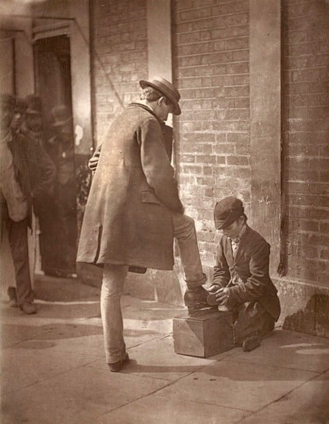
1877년, 구두닦이 소년
1904년 뉴욕, 첫번째 지하철 손님들
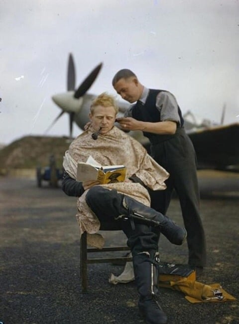
책을보며 이발중인 영국 군인
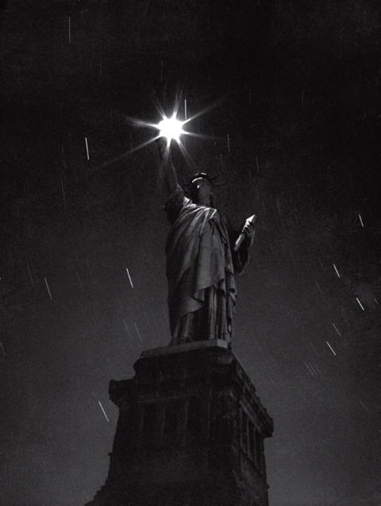
1942년, 정전된 자유의 여신상
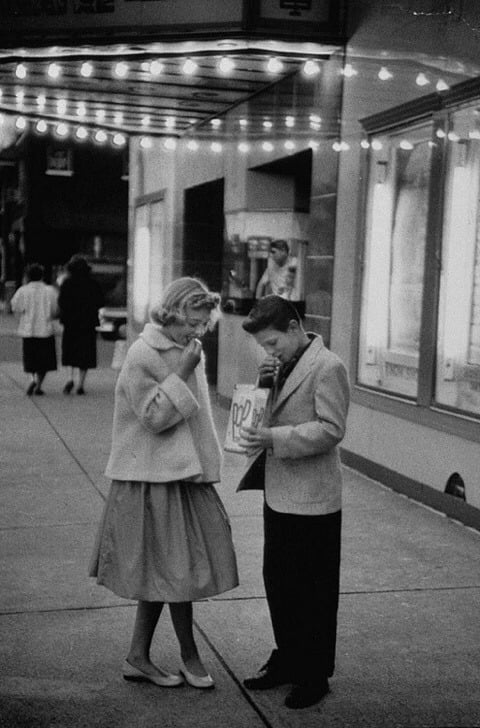
1957년, 데이트하는 10대 커플
1972년, 닉슨대통령이 젓가락을 어떻게 쥐나 구경하는중
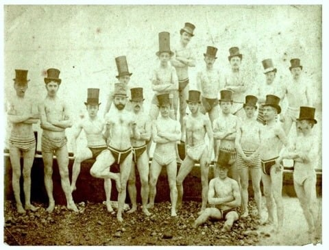
1863년, 영국의 수영클럽
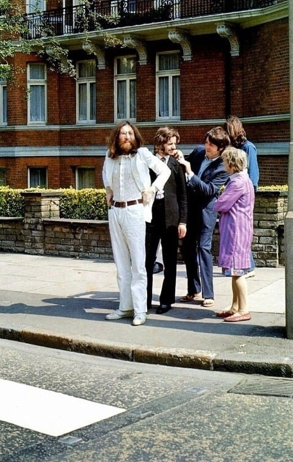
1969년, abby road 건널 준비중인 비틀즈
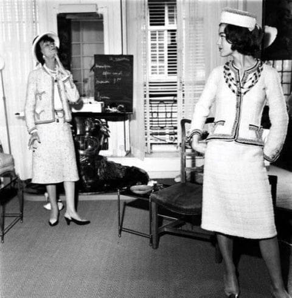
코코샤넬과 슈나이더
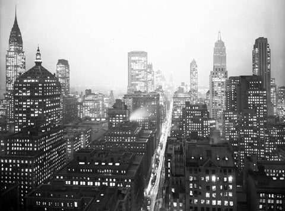
1935년, 뉴욕
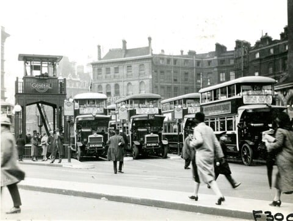
1927년, 영국 빅토리아 정류장
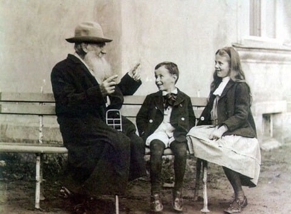
1909년, 톨스토이와 손자손녀
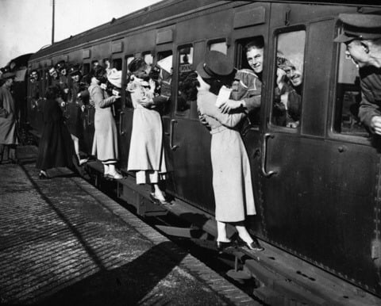
1935년 영국, 떠나는 군인과 애인의 작별키스
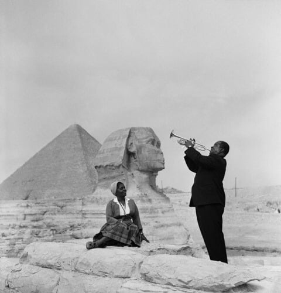
1961년, 아내를 위해 연주중인 루이 암스트롱
1963년, 존 F 케네디와 악수하는 10대의 빌클린턴
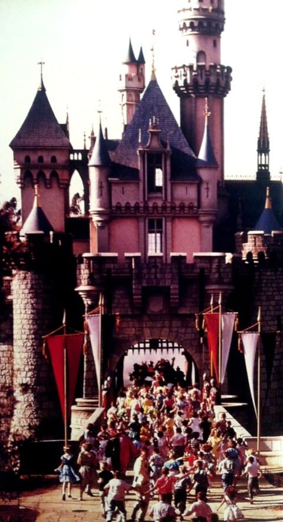
1955년, 디즈니랜드 첫 개장
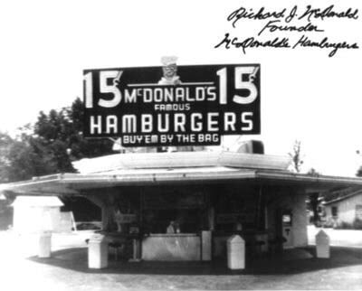
1948년, 최초의 맥도날드
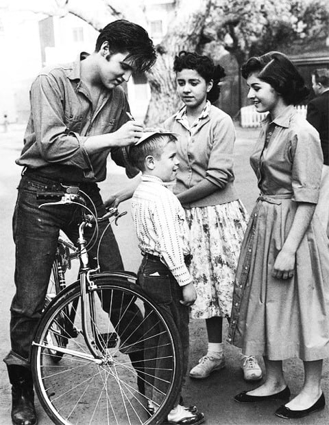
1958년, 싸인해주는 엘비스 프레슬리
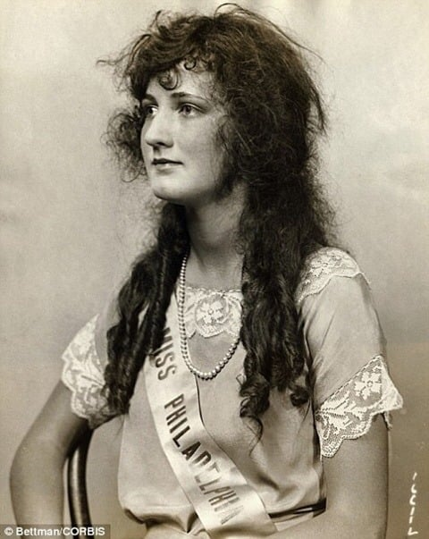
1924년, 미스 아메리카
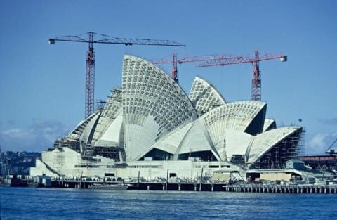
1966년, 시드니 오페라하우스 건설중
1933년, 자전거를 타고노는 엘리자베스 2세
1953년, 찰스왕자
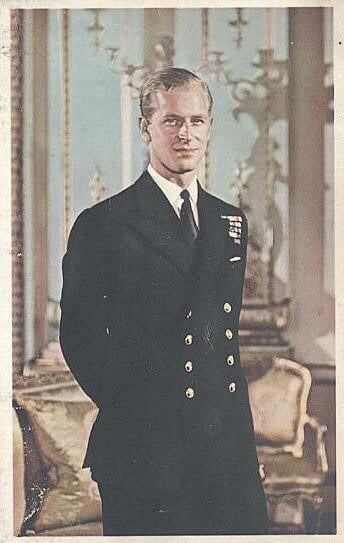
1947년, 엘리자베스 2세와 결혼할 당시의 필립공
1933년, 런던의 2층버스는 안전하다고 설명하고 있다
1947년, 딸을 시집보내는 처칠
만화 베르사유의 장미 오스칼의 실제모델 비요른 안데르센
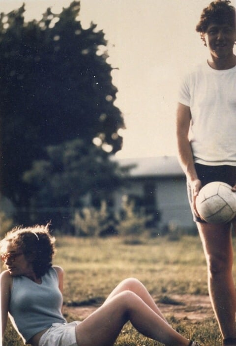
1975년, 빌 클린턴과 힐러리 클린턴
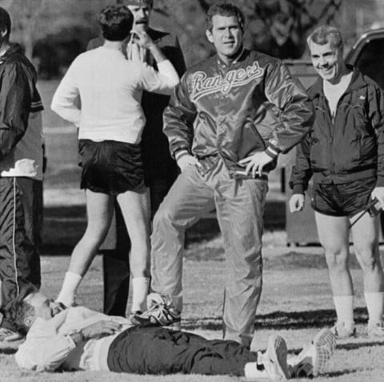
젊은시절의 조지 부시
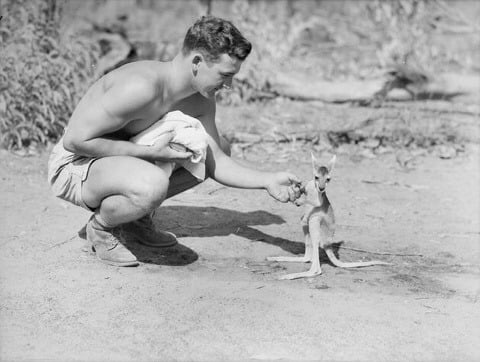
1942년, 미국 군인과 애완 캥거루
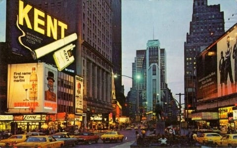
1972년, 뉴욕
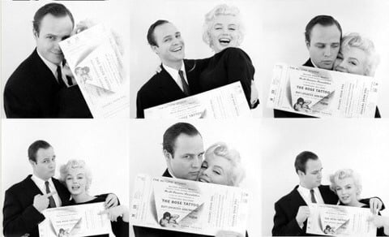
말론브란도와 마릴린 먼로
딸과 이야기를 나누는 존 F 케네디
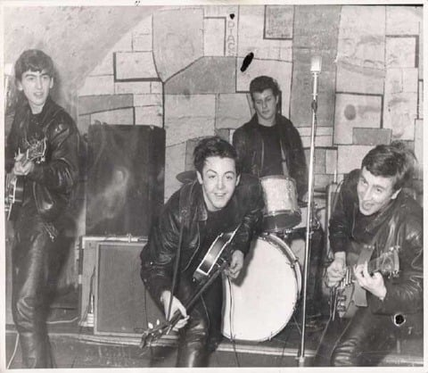
1961년, 비틀즈
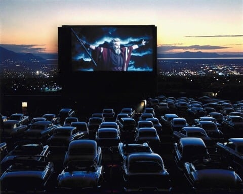
1958년, 미국 자동차극장
댓글
수집 당시 댓글 22개
ㅇㅇ · 11.16 03:00:37
· ㅇㅇ · 11.16 03:04:24
· ㅇㅇ · 11.16 03:09:05
· ㅇㅇ · 11.16 04:19:54
· ㅇㅇ · 11.19 10:22:12
ㅇㅇ · 11.16 03:40:57
봇치쟝 · 11.19 08:30:49
ㅇㅇ · 11.19 08:32:34
ㅇㅇ · 11.19 08:36:29
ㅇㅇ · 11.19 08:37:39
· ㅇㅇ · 11.19 09:15:14
ㅇㅇ · 11.19 08:45:22
ㅇㅇ · 11.19 08:46:48
ㅇㅇ · 11.19 08:59:01
ㅇㅇ · 11.19 09:10:12
ㅇㅇ · 11.19 09:13:50
ㅇㅇ · 11.19 09:17:46
ㅇㅇ · 11.19 09:27:07
ㅇㅇ · 11.19 09:30:03
ㅇㅇ · 11.19 09:36:42
더블알발음은아르르 · 11.19 09:49:04
ㅇㅇ · 11.19 10:53:32